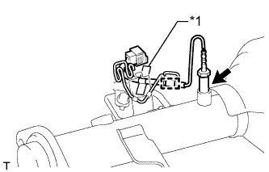
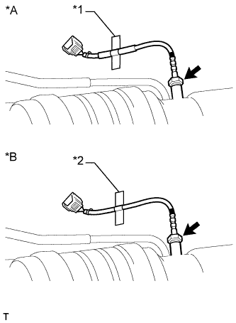
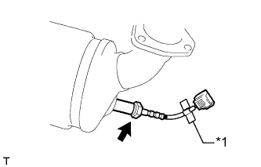

ДАТЧИК ТЕМПЕРАТУРЫ ОТРАБОТАВШИХ ГАЗОВ > УСТАНОВКА |
| 1. УСТАНОВИТЕ ДАТЧИК ТЕМПЕРАТУРЫ ОТРАБОТАВШИХ ГАЗОВ № 3 |
|  |
С помощью разрезной головки 14 мм установите датчик температуры отработавших газов № 3.
| *1 | Голубая лента |
Закрепите жгут проводов датчика температуры отработавших газов № 3.
| 2. УСТАНОВИТЕ ДАТЧИК ТЕМПЕРАТУРЫ ОТРАБОТАВШИХ ГАЗОВ № 2 |
|  |
С помощью разрезной головки 14 мм установите датчик температуры отработавших газов № 2.
| *A | для моделей с автоматической трансмиссией |
| *B | для моделей с механической трансмиссией |
| *1 | Желтая лента |
| *2 | Красная лента |
| 3. УСТАНОВИТЕ ДАТЧИК ТЕМПЕРАТУРЫ ОТРАБОТАВШИХ ГАЗОВ |
|  |
С помощью разрезной головки 14 мм установите датчик температуры отработавших газов.
| *1 | Зеленая лента |
| 4. УСТАНОВИТЕ ПРИЕМНУЮ ТРУБУ В СБОРЕ |